- Lists using square brackets []
- Example of Lists
int_list = [1, 20, 77, 800, 39, 21, 5]
str_list = ["python", "javascript", "java", "rust", "go", "dart"]
print(int_list)
print(type(int_list))
print(str_list)
print(type(str_list))
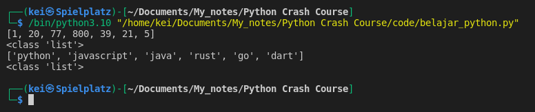
-
Some of the things that I could do with lists:
- Sort the values in ascending or descending order
- Find values in list or details about the list
- Insert or remove values from the list
- Get a sub-list from the list
- Iterate through the list and perform functions or checks on each list item
-
Some functions that could help me work with lists:
- Sort : sort(), sorted()
- Find : len(), min(), max(), count(), in, indexing, slicing
- Insert/remove : append(), insert(), extend(), remove(), pop()
- Sub-lists : slicing, in-place, copying
- Iteration : for loops, while loops
-
I can use dir() function to check for the built-in methods and functions available for List
int_list = [1, 20, 77, 800, 39, 21, 5]
print(dir(int_list))
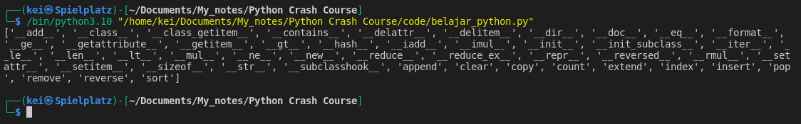
- Using sorted() function to sort a list
int_list = [1, 20, 77, 800, 39, 21, 5]
str_list = ["python", "javascript", "java", "rust", "go", "dart"]
print(f"Integers : {int_list}")
print(f"Strings: {str_list}")
sorted_int = sorted(int_list)
sorted_str = sorted(str_list)
print(sorted_int)
print(sorted_str)
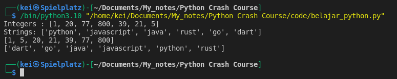
- Using sort method to sort a list
int_list = [1, 20, 77, 800, 39, 21, 5]
str_list = ["python", "javascript", "java", "rust", "go", "dart"]
print(f"Integers : {int_list}")
int_list.sort()
print(f"Integers : {int_list}")
print(f"Strings: {str_list}")
str_list.sort()
print(f"Strings: {str_list}")
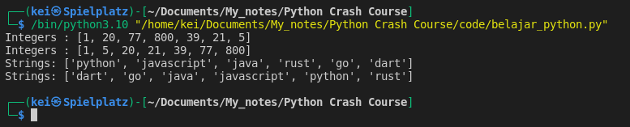
- Using in to find information if a value is in a list
int_list = [1, 20, 77, 800, 39, 21, 5]
str_list = ["python", "javascript", "java", "rust", "go", "dart"]
print(99 in int_list)
print("python" in str_list)
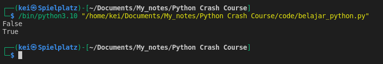
- Using index method to find the location of a value in a list
int_list = [1, 20, 77, 800, 39, 21, 5]
str_list = ["python", "javascript", "java", "rust", "go", "dart"]
print(int_list.index(800))
print(str_list.index("python"))
print(int_list.index(7)) #this will throw an error
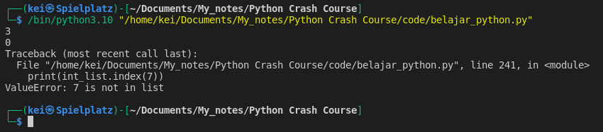
- Using len() function to find the length of a list and get the last value in a list
int_list = [1, 20, 77, 800, 39, 21, 5]
str_list = ["python", "javascript", "java", "rust", "go", "dart"]
print(len(int_list))
print(len(str_list))
print(int_list[len(int_list)-1])
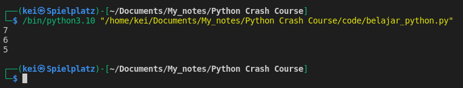
- Use min() and max() function to find the minimal or maximal value of an element
int_list = [1, 20, 77, 800, 39, 21, 5]
str_list = ["python", "javascript", "java", "rust", "go", "dart"]
print(min(int_list))
print(max(int_list))
print(min(str_list))
print(max(str_list))
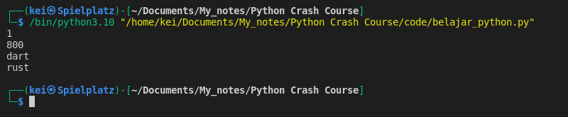
- Using count method to find occurences of a certain value in a list
int_list = [1, 20, 77, 800, 39, 21, 5, 81, 88, 15, 81, 10, 81]
str_list = ["python", "javascript", "go", "java", "rust", "go", "dart"]
print(int_list.count(81))
print(str_list.count("go"))
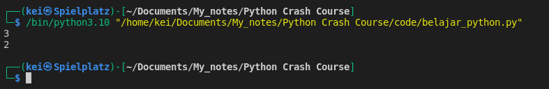
- Using append method to add an element to the end of a list
int_list = [1, 20, 77, 800, 39, 21, 5]
str_list = ["python", "javascript", "java", "rust", "go", "dart"]
int_list.append(81)
print(int_list)
str_list.append("kotlin")
print(str_list)
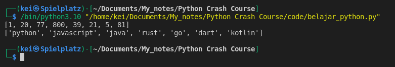
- Using insert method to add an element to a certain position in a list
int_list = [1, 20, 77, 800, 39, 21, 5]
str_list = ["python", "javascript", "java", "rust", "go", "dart"]
int_list.insert(3,81)
print(int_list)
str_list.insert(2,"kotlin")
print(str_list)
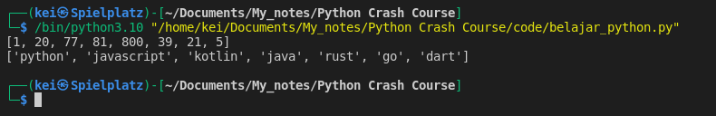
- Using extend method to add a list to another list
int_list = [1, 20, 77, 800, 39, 21, 5]
new_int_list = [81, 99, 30, 9, 15, 94]
str_list = ["python", "javascript", "java", "rust", "go", "dart"]
new_str_list = ["kotlin", "c++", "assembly", "julia"]
int_list.extend(new_int_list)
print(int_list)
str_list.extend(new_str_list)
print(str_list)
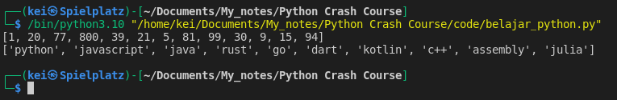
- Using remove method to remove an element from a list
new_int_list = [81, 99, 30, 9, 15, 94]
new_str_list = ["kotlin", "c++", "assembly", "julia"]
new_int_list.remove(99)
print(new_int_list)
new_str_list.remove("kotlin")
print(new_str_list)
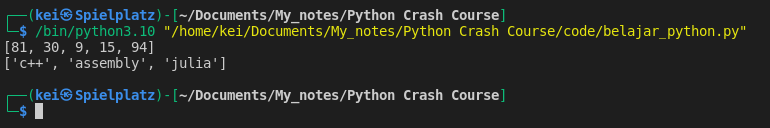
- Using pop method to remove an element from a list
new_int_list = [81, 99, 30, 9, 15, 94]
new_str_list = ["kotlin", "c++", "assembly", "julia"]
print(new_int_list.pop(1))
print(new_int_list)
print(new_str_list.pop(0))
print(new_str_list)
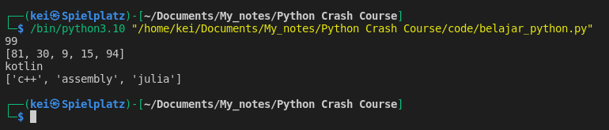
- List is mutable I can use indexing to change the element, reassign it to something else
new_int_list = [81, 99, 30, 9, 15, 94]
new_str_list = ["kotlin", "c++", "assembly", "julia"]
print(new_int_list[-1])
new_int_list[-1] = 100
print(new_int_list)
print(new_str_list[0])
new_str_list[0] = "python"
print(new_str_list)
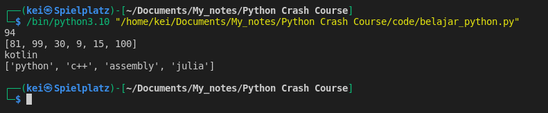
- I can also work with sub-list using slicing
new_int_list = [81, 99, 30, 9, 15, 94]
new_str_list = ["kotlin", "c++", "assembly", "julia"]
new_int_list[-1] = 100
print(new_int_list)
print(new_int_list[:4])
print(new_int_list[1::2])
new_str_list[0] = "python"
print(new_str_list)
print(new_str_list[1:3])
print(new_str_list[::2])
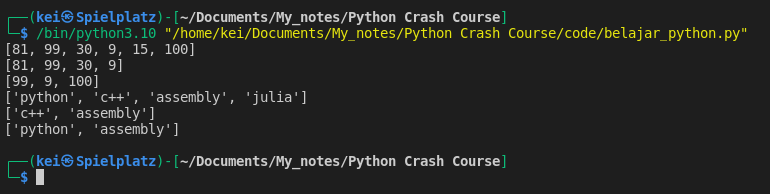
- I can iterate through list, example of using for loop
new_str_list = ["python", "c++", "assembly", "julia", "dart", "go", "javascript"]
for element in new_str_list:
print(element)
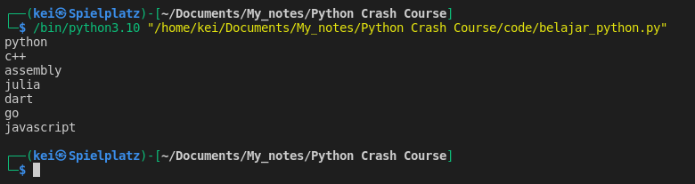